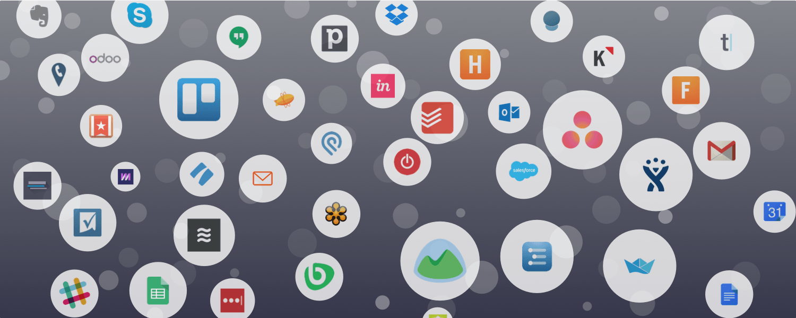
You’ve found a project management system that works for your team, tweaked your apps to fit that workflow, and boiled your goals down into clear next-steps. Now, it’s time for the real work.
But sure enough, roadblocks appear. When your team gets into the weeds, you find it difficult to collaborate, share knowledge, adjust to unforeseen challenges, and push your project to the finish line.
Projects are messy structures that quickly take a life of their own. And if you want to tame them, you need a whole team of specialized apps.
Your project management app isn’t always enough on its own. You’ll also need tools for storing notes, chatting with your team, gathering feedback, and scheduling meetings—along with any other apps that fill gaps in your workflows.
Different projects call for different apps—and every team is comfortable with a different stack, or toolkit. Let’s look at project management app stacks from more than a dozen teams across a range of industries, to see how they turn projects into reality.
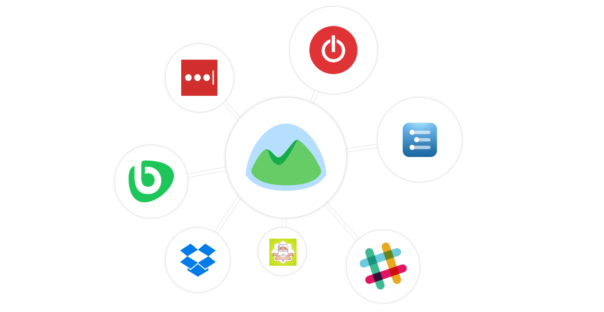
Crafting delightful user experiences for clients takes a lot of communication. After deciding on goals, you’ll need to keep your customers up-to-date on your progress, any design drafts, and changes to your plan.
Now try doing that with a team of remote designers and developers who have varied work hours. That’s how they tackle client work at Stampede Design, turning concepts into responsive websites and interactive experiences.
Pulling off a project requires more than a dozen apps. “We start with project creation in Basecamp,” says Stampede culture manager Zana Fauzi, “kicking it off with the client and asking for assets before we start.”
Before assigning those tasks, they turn to scheduling tool ResourceGuru to see who has open time, and to estimate when the project can be shipped. “We weigh in the workload and working hours of all our team members across different time zones,” Fauzi says.
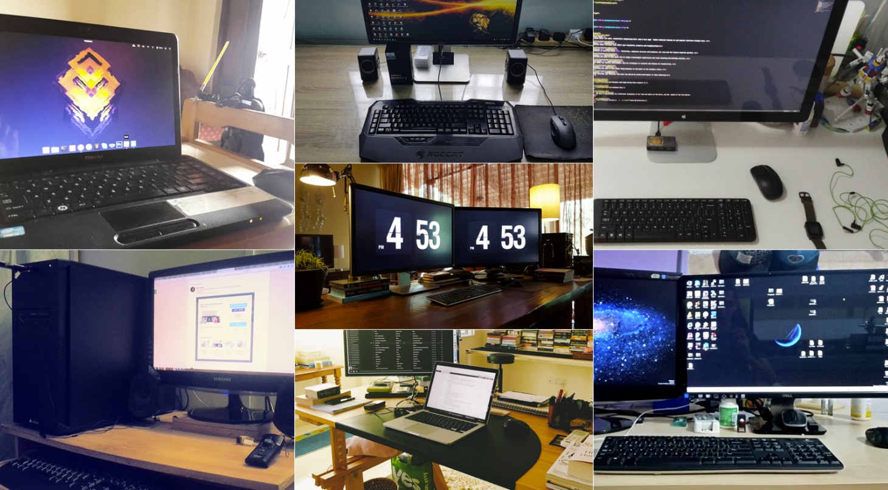
With the timeframe figured out, they can log those dates and assignments in Basecamp. Next, they create a folder in Dropbox for the project, so clients can have access to any design assets.
All of Stampede’s conversations happen in Slack—a chat app—and they connected it to their other apps with Zapier. They pipe in notifications about project changes, submissions to their Gravity Forms form, and posts on their social media accounts. They also use Slack to chat with clients: “We have dedicated Slack channels with clients, or otherwise communicate in Basecamp,” Fauzi says.
Zapier Integrations:
Time tracking app Toggl keeps the project focused and on-time. “It ensures team members do not go over the estimated time limit, and also checks if they are overwhelmed or underutilized,” Fauzi says. Once a project launches, the team celebrates with little rewards on Bonusly.
Every tool plays a different part in keeping the Stampede team focused, so they can keep their clients happy.
Read our in-depth reviews of some of the apps in Stampede’s stack: Basecamp, Toggl, Dropbox, and Slack.
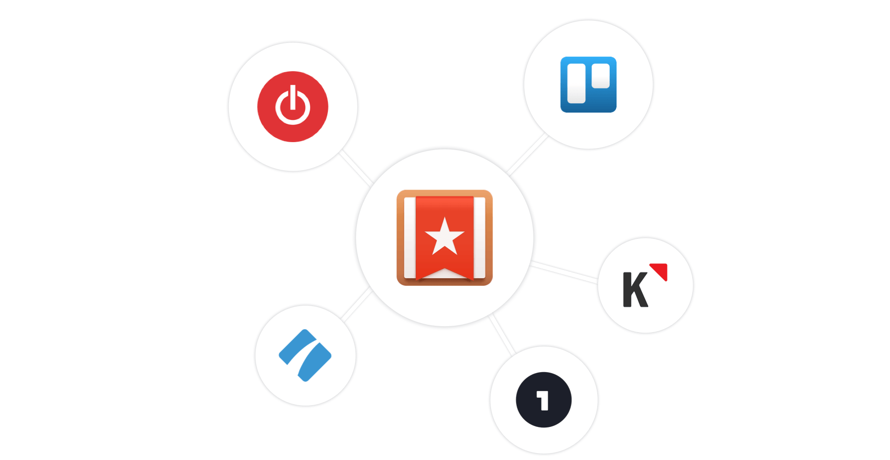
Sometimes you need to see a project in a different light, with one view for planning and another for assigning tasks. That’s why print logistics company Thumbprint relies on both Trello and Wunderlist for their projects.
“Trello allows us to show projects along a workflow and how they are progressing,” says Thumbprint COO Tod Ellington “Wunderlist allows us to see tasks by teams and clients.” To help Trello and Wunderlist talk to each other, they rely on Zapier.
Zapier Integrations:
Every project follows the same basic steps, so the Thumbprint team uses workflow checklists in Process Street to keep track of everything. Toggl helps them keep track of time spent on projects, while a Klipfolio dashboard shows the stats for each department’s projects.
Team password manager OneLogin ties everything together, the “starting point for each employee, where they access the software specific to each role,” says Ellington. That, along with the Zapier integrations, keeps their diverse set of project tools connected so they can use the best tool for each task.
Read our in-depth reviews of some of the apps in Thumbprint’s stack: Trello, Wunderlist, and Toggl.
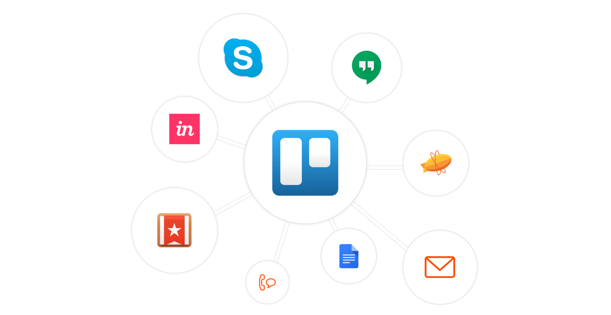
Sometimes working with clients means using their preferred tools—even though they might not be your favorites. That’s what product designer Bryan Landers has discovered as he juggles client work and his Mission & Values podcast.
“I use Wunderlist for my own personal tasks, and also use Trello for tasks when the card-based, drag-and-drop UI is better,” he says. “When clients have their own apps for task management, I will use them if I think that it will save time with communication. This is definitely challenging because it means managing tasks across multiple apps, but it’s worth it for the increased transparency and alignment with the client.”
Sticking to your own apps when you have one or two clients works fine. But when you’re communicating with 10 different teams simultaneously—each one with its own apps and workflows—switching from platform to platform gets old, fast.
The one thing that most project management tools have in common, though, is that they send notifications via email. Landers uses that to his advantage: his inbox acts as a central notification hub, and he triages work from there.
But a full inbox can be overwhelming—especially with notifications coming in at all hours. “I find myself always tweaking notifications because one benefit of being a freelancer is that you are in charge of managing your own time,” Landers says. “If you don’t want to be contacted after 10pm by a client, then it’s up to you to turn off notifications for all of these apps.”
If email is the common denominator among your team’s tools, Zapier can help you control the flow of information. You can update clients about their projects via email, without worrying about which project app they’re using. Most other apps—including design feedback tool Zeplin—include email notifications to loop clients in. And when an email isn’t enough, Landers starts a Skype or Google Hangouts call. It’s just enough to give some order to a maze of client projects.
Read our in-depth reviews of some of the apps in Bryan’s stack: Trello, Wunderlist, and Google Docs.
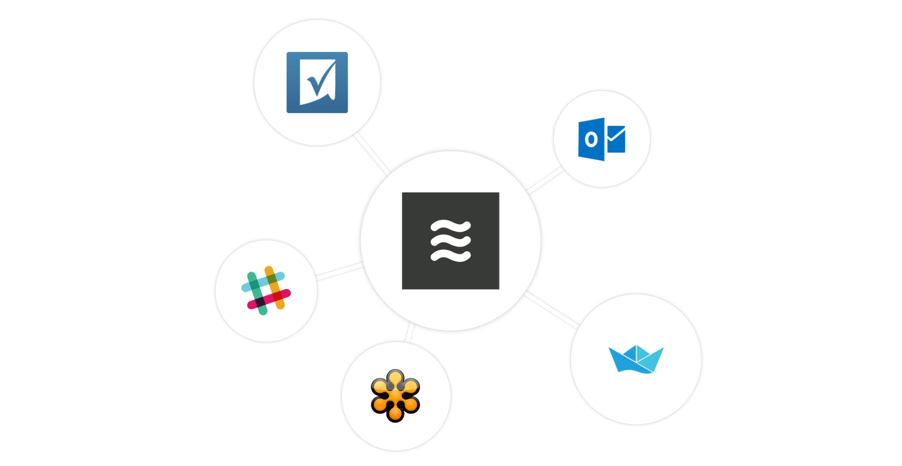
Mapping out a schedule is a crucial part of planning a successful project. That’s why Anguleris Technologies uses three different tools to scope out dates for their building information modeling projects: Float, LiquidPlanner, and Smartsheet.
Each tool plays a role in a progressive scheduling structure, which moves from short- to long-term goals. They need to see who has time to take on new work, figure out when each task will be completed, and then share that info with clients.
It starts in forecasting app Float, which the team uses to plan who’s working on what in the short-term (i.e. the next two weeks or so).
With the short-term plan in place, the Anguleris team creates a new project in LiquidPlanner where they can schedule when each task will actually be completed. They can then create a timeframe in Smartsheet to share the expected completion dates with clients. Outlook, Slack, and GoToMeeting fill the communication gaps, helping their team discuss tasks internally and meet with clients.
Read our in-depth reviews of some of the apps in Anguleris’s stack: LiquidPlanner, Smartsheet, and Slack.
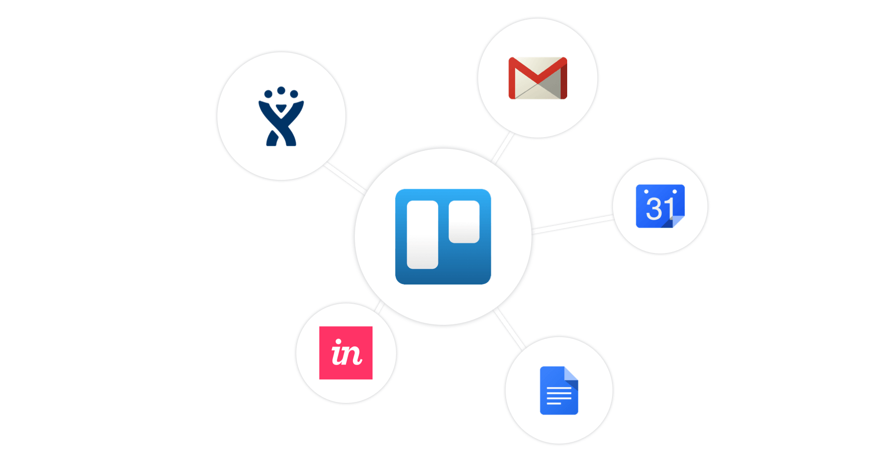
Projects of different sizes require different apps. That’s why the team at StarOfService—an app that connects people to service professionals like personal trainers and translators—never tries to force a “small project” app to do a “big project” app’s job.
“We love Kanban-style workflows,” says StarOfService co-founder Maël Leclair. They started out with Trello, but hit its limits as their projects expanded. “For us Trello is not scaling super well for large projects, so we keep it as a sidekick that complements JIRA.” Trello gets the smaller projects, then they turn to JIRA for more complicated jobs.
Zapier helps keep projects running smoothly, no matter which app they’re in. “We have a Gmail address that is used for reporting bugs,” Leclair says. “We use a Zap to send those bug reports automatically to JIRA and Trello.”
Zapier Integrations:
“We also try to centralize as much information as possible into Slack,” Leclair says. That’s where they discuss projects internally, and Zapier also notifies them about alerts from their server by automatically sending the messages to Slack. “It helps us to identify issues early before they become a major problem,” Leclair says.
Read our in-depth reviews of some of the apps in StarOfService’s stack: Trello, Google Calendar, JIRA, Slack, and Google Docs.
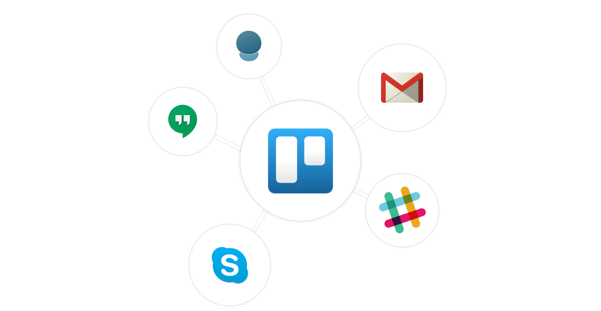
No, this isn’t a science fiction movie: the team at Blue Ocean Robotics spends every day building robots that improve quality of life for humans. From industrial robots that pick parts and disinfect equipment to telepresence robots that help remote team members join in at the office, their projects are already part of workflows at companies around the globe.
To build those robots and market them, the Blue Ocean team relies on many of the same tools you might already be using. “We actually use a very streamlined set of tools in our project management,” says vice president of marketing Thomas Midtgaard-Jørgensen. “We use Trello as the project overview, with the Scrum for Trello add-on which allows us to manage hours.”
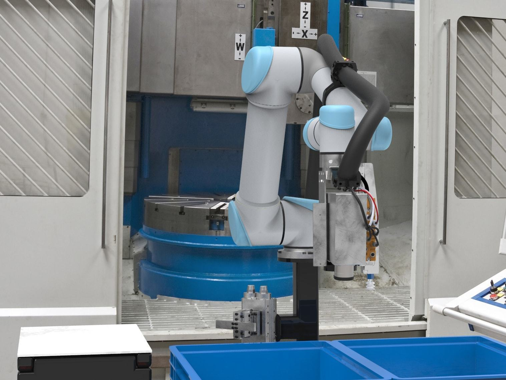
Many of their tasks come in via Gmail emails, alongside their regular correspondence. “The best way for us to sort deliverables from information is to make tasks in Gmail,” Midtgaard-Jørgensen says. “These tasks are then converted into Trello cards via a Zap.”
Zapier Integration:
After struggling to implement Evernote in their workflow, the Blue Ocean team settled on Trello for storing notes alongside their tasks and projects. But their communication tools—Slack for text chat, plus Skype and Google Hangouts for video calls—really help their projects hum along.
“If you do not communicate via daily scrum meetings and walkabouts, then you cannot have a finger on the project’s pulse,” Midtgaard-Jørgensen says. “This element of transparency removes any doubts about where we’re going with the projects.”
Read our in-depth reviews of some of the apps in Blue Ocean Robotics’s stack: Trello and Slack.
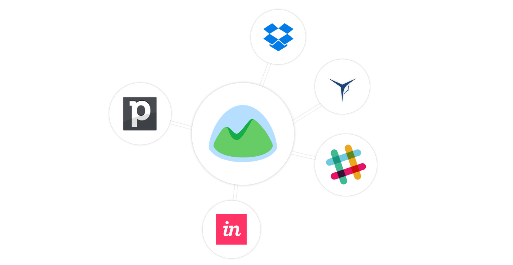
If you start a project off on the right foot, and get all of your to-dos lined up at the get-go, you won’t waste time tracking down project info later. That’s what Tinkerbox Studios—a design and development studio—has found with their projects.
“One of the most useful things we’ve got down pat is the onboarding process for projects,” says Tinkerbox Studios founder Jaryl Sim. Whenever they win a deal in Pipedrive—their CRM—they need to create a project in Basecamp, a Slack channel where they can chat about that project, and a Dropbox folder. Then, they alert everyone about the new undertaking.
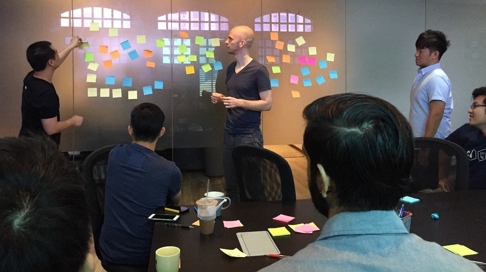
Zapier handles that whole process automatically. From the deal in Pipedrive, a Zap creates the project, Slack channel, and Dropbox folder, plus sets up billing for the client. Then, “it sends us all an email telling us where everything is, which cuts down a lot of informal coordination to get things set up,” Sim says.
That way, the entire team always has the data they need, so they can focus on the project at hand.
Zapier Integrations:
Read our in-depth reviews of some of the apps in Tinkerbox’s stack: Pipedrive, Basecamp, Slack, and Dropbox.
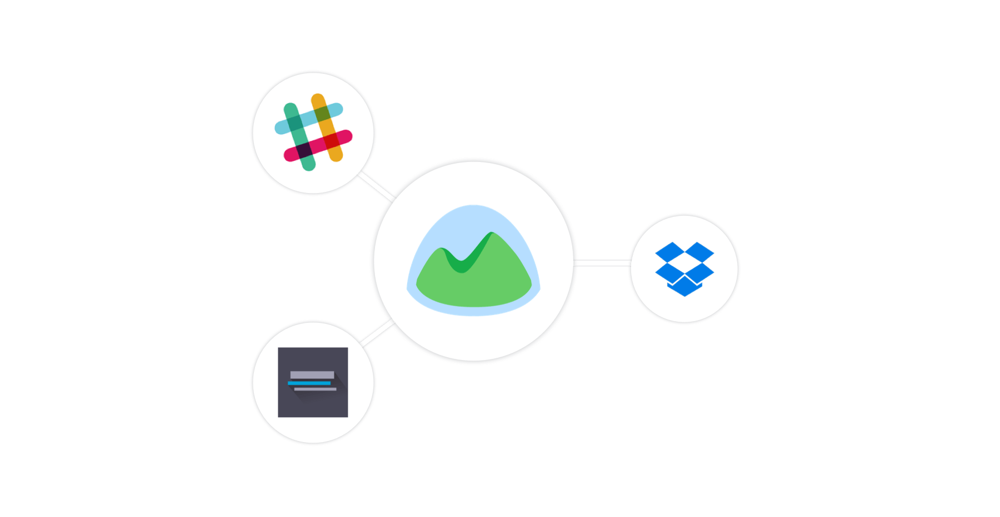
No app can cover every project management method. Your best bet is to find a tool that does most of what you need, and then see if a companion app can fill in the gaps.
That’s why the Delve team uses Basecamp with Workstack—an add-on that visualizes how long each task will take and whose schedule is the most full. “Workstack provides the leadership team with a dashboard of priorities and project scheduling across projects,” says Delve CEO Jeff Berkowitz.
Delve specializes in research projects in the political and business spheres. They use Dropbox to keep their files organized and in-sync, while Slack helps them communicate about everything related to specific projects. “We use Zapier to connect Basecamp to Slack, where all of our team and project communication takes place,” Berkowitz says. That way, no one misses an update in Basecamp, and they don’t need to be watching the app constantly.
Zapier Integration:
Read our in-depth reviews of some of the apps in Delve’s stack: Basecamp, Slack, and Dropbox.
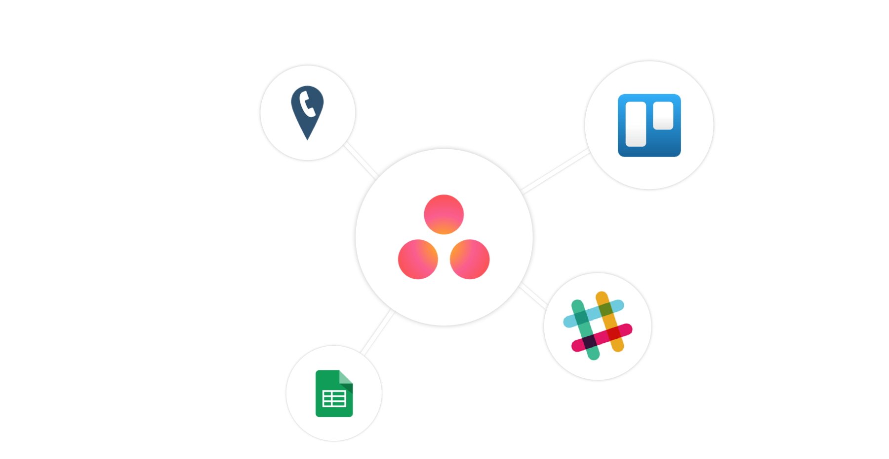
Running two companies at the same time means juggling a lot of tasks. But the High Sails Media team is pretty good at keeping multiple projects afloat simultaneously: they run their design firm alongside StopGoLove, their wedding photography and film company. Each project has a ton of moving parts, and they rely on Zapier to put each piece in the right place.
“We use Zapier to create Trello cards from multiple Asana workspaces and projects, as well as alert us in Slack when a new Asana task is created,” says visual designer Jason McCutchen. “We also use it in the StopGoLove side to automagically migrate leads in our lead email list to our clients’ email lists based on a field in a Google spreadsheet.”
Zapier Integrations:
They also use Zapier to get Slack alerts about CallRail calls. That way, each task, call, and discussion is all in the same place.
“We worked very hard to get the Zaps to complement one another and work sequentially,” McCutchen says. “Zaps have saved us more time and energy than I can probably even quantify.”
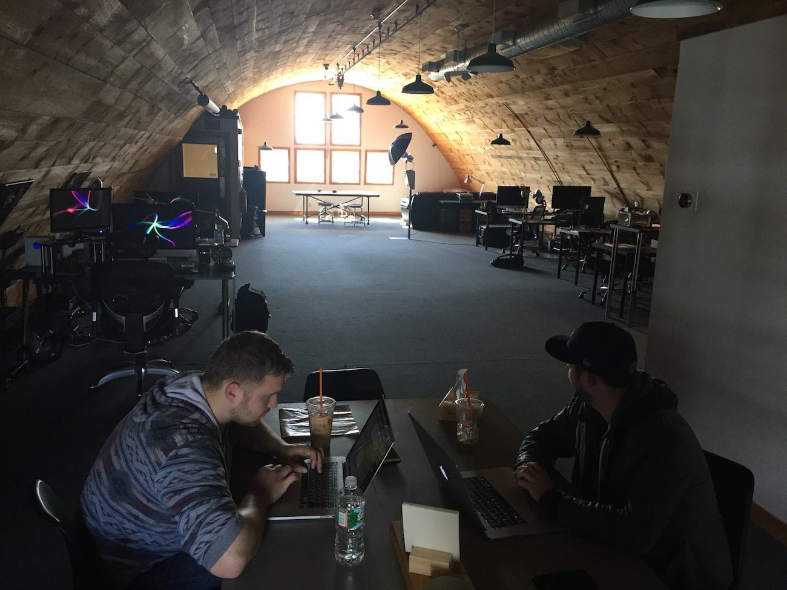
Read our in-depth reviews of some of the apps in High Sails Media’s stack: Asana, Trello, and Google Sheets.
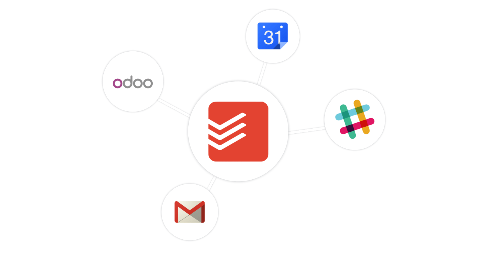
There’s very little room for error in the food exporting business. Miss your deadlines or forget a task, and you could end up with a container full of mushy, rotting products. That’s why the Bata Food has a checklist to follow for each type of project.
“We prepared templates on Excel before for 2-3 different scenarios,” says Bata Food consultant Burak Bardakçı. “For each sale, we import a template in this project in Todoist which assigns tasks automatically to the people in charge.” That ensures nothing’s overlooked.
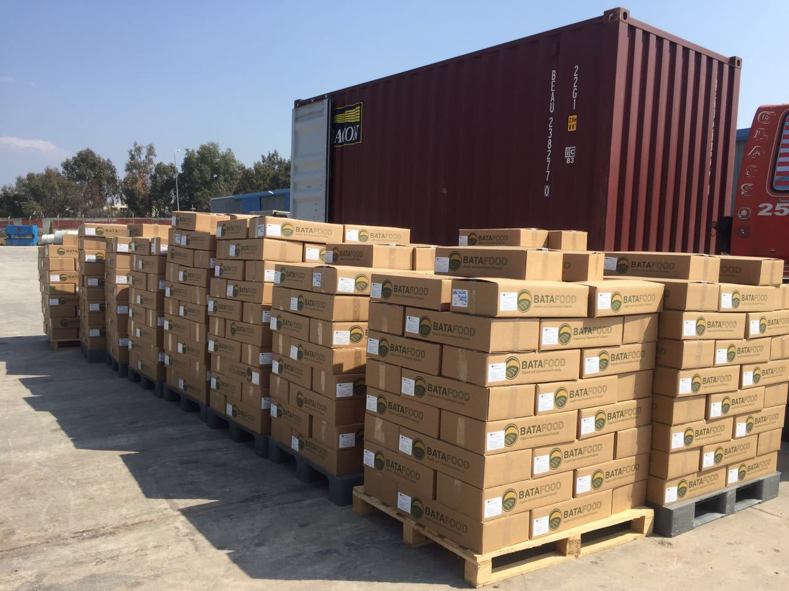
Zapier integrations keep track of everything else. They log leads in OpenERP, and use Zapier to share new customers on Slack. From there, each lead is automatically added to a MailChimp mailing list. “Any new action on OpenERP, such as “new quotation”, “new lead/opportunity”, or “new contact”, sends a notification to a Slack channel so everyone in the team can track or search what is going on in the system,” says Bardakçı.
Todoist tasks and upcoming Google Calendar events are also shared in Slack, to keep everything in one place. With Slack as the central hub for every activity, and Todoist templates ensuring that the same tasks are completed every time, the Bata Food team is able to tackle every project on schedule.
Zapier Integrations:
Read our in-depth reviews of some of the apps in Bata Food’s stack: Todoist, OpenERP, Slack, and Google Calendar.
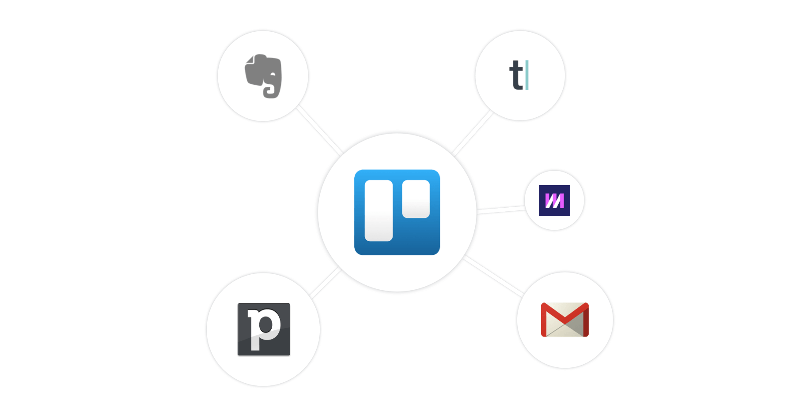
Planning events requires coordination between a wide range of teams, something Conneqtify has solved with a form-powered project workflow.
“I ask a few questions in Typeform,” says Conneqtify founder Oskar Wiklund “with those questions, I automate the entire workflow by adding info and deadlines to the tasks, and assigning them.” The form starts off by asking what type of event will be planned—something that’s useful for Wiklund when he’s doling out to-dos.
“I assign different tasks to different people depending on what type of task it is: communication tasks to the communication team, logistics to the logistics team,” Wiklund says. Zapier integrations help with that, and also queue up social media posts about the event right from the form.
Zapier Integrations:
Simple-yet-powerful workflows like these that help their projects go smoothly. “As a community builder, Zapier has allowed me to connect with more people than ever,” Wiklund says. “I can automate the way we connect with customers and make it feel very personal and professional.”
Read our in-depth reviews of some of the apps in Conneqtify’s stack: Typeform, Trello, Pipedrive, and Evernote.
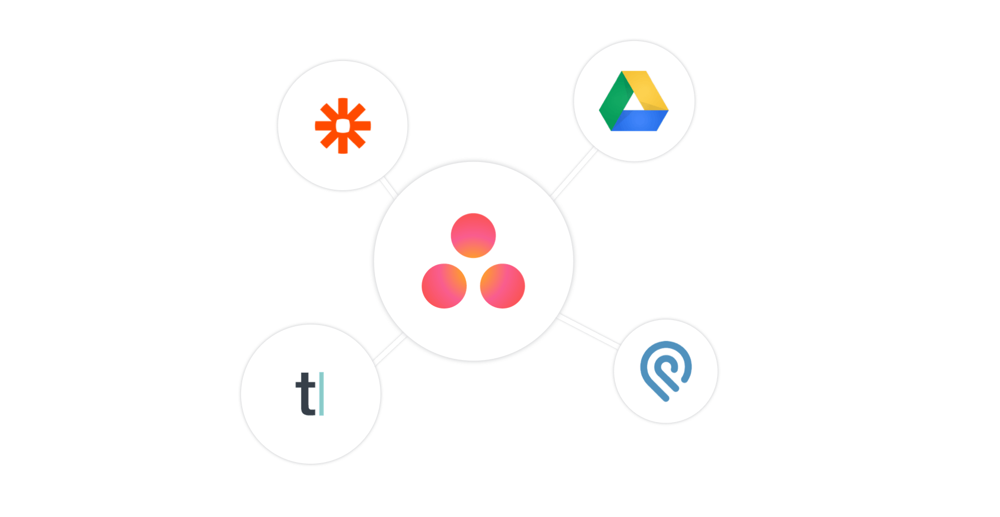
New projects mean new files (lots of them) and it’s important to keep them organized. A detailed folder structure helps the team at Interlike—an online marketing platform—stay productive.
“We have company guidelines on project folder structure in Google Drive,” says Interlike CEO Kirill Kaplun, “which allows us to have everything in its place, easily accessible and sharable.” To make sure those folder structures are used every time, they rely on Zapier integrations to create the folders for new projects.
Each project—which, at Interlike, often means a new feature request or bug to fix—starts with a Typeform or Podio form. “We have processes, not just projects,” Kaplun says. When there’s a new bug or feature request, a team member will fill out a form. Then, Zapier does the rest. “Once project is initiated the correct folder structure is created, and Zapier creates events and appointments in corresponding calendars,” Kaplun says.
Zapier Integrations:
Zapier integrations keep their projects structured and organized, so their team can focus on building their app. And when they need to prototype a new feature, they often use Zapier to test it out, too. The integrations give them a quick way to prototype without code, so they can spend more time squashing bugs and improving their platform.
Read our in-depth reviews of some of the apps in Interlike’s stack: Podio, Typeform, Asana, and Google Drive.
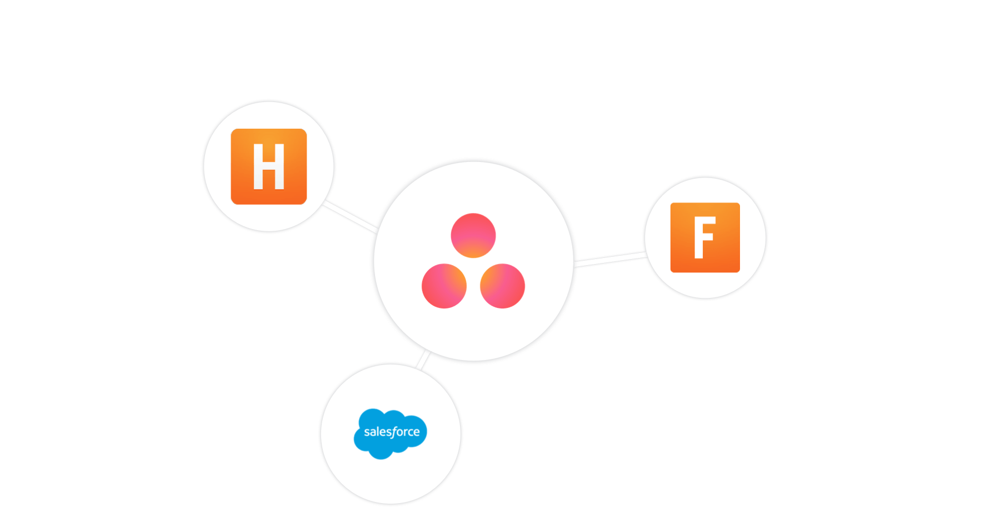
The team at White Room Automation has struggled to find the perfect project management tool.
“There are very few apps that do everything well,” says White Room Automation principal consultant Ryan Plester. “Harvest is a great time-tracking tool, but its expenses are limited. Our accounting system is another good example: great for basic accounting but for getting into the details of product sales, we had to build custom objects in Salesforce.”
Instead of using just one tool, they’ve found tools that work best for each task: Asana for tasks, Harvest for time tracking, and customized Salesforce objects for accounting. To tie everything together, they use Zapier.
“Zapier enables us to automate tasks that are easily repeatable but take up time when done manually,” Plester says.
Zapier Integrations:
Read our in-depth reviews of some of the apps in White Room Automation’s stack: Asana, Harvest, and Salesforce.
Every project and team has different needs. For some, planning ahead is most important, the trick that helps their projects flow smoothly. Others need to look in a wide range of tools, and need something that pulls everything together. You might find that documentation, or checklists, or some other aspect is what makes or breaks your projects.
What’s important is that you have a tool for every need your projects bring. Don’t try to shoehorn tasks into a project management app that’s not built for them. Instead, add on a new tool for that task, and use integrations—perhaps with the over 600 apps integrated with Zapier—to connect it to your projects and make everything run smoothly.
Start out by finding a project management app for your team with our roundup of the best project management apps—and feel free to use more than one if you need. Then, here are roundups of some other great business software to help with every other part of your projects:
Ever noticed how so many of your tasks follow the same routine—and how much that routine needs standardized? That’s where Standard Operating Procedures come in. They’re the checklists that keep surgeries and flights safe, and can help make sure your next projects are an equal success.
Here’s how.
Enjoy this chapter? Read it online or share it at https://zapier.com/learn/ultimate-guide-to-project-management/project-management-toolkits/.
Written by Zapier marketer Matthew Guay.